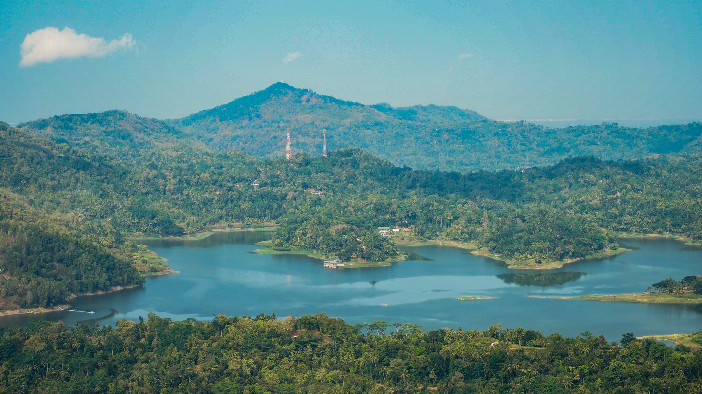
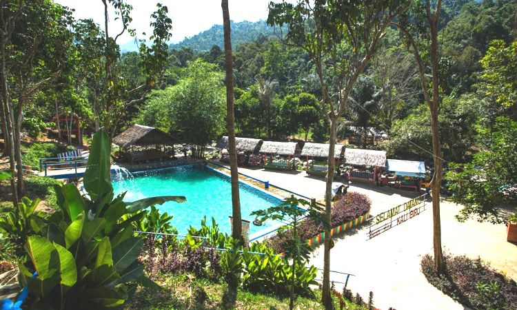
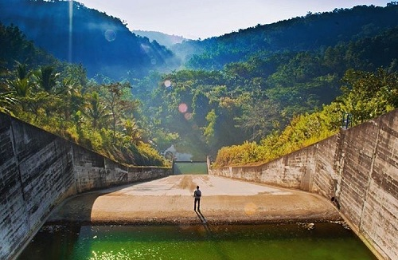
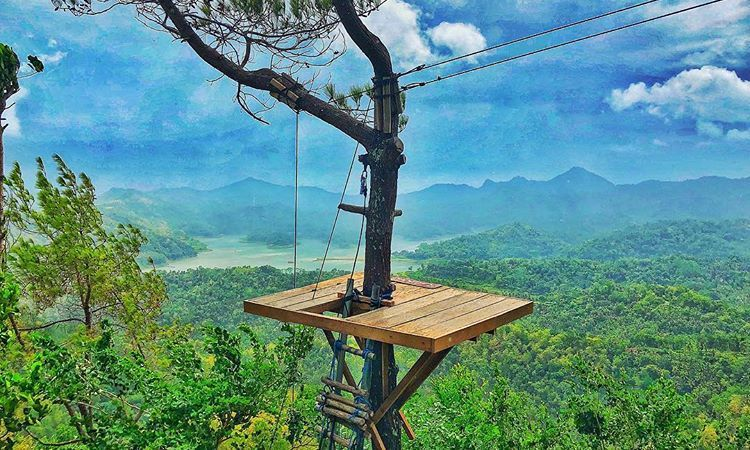
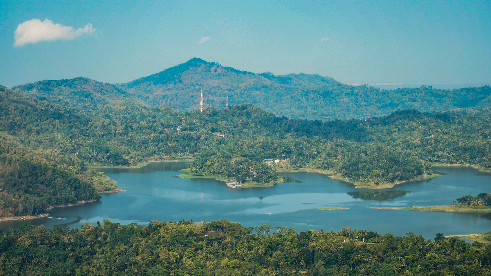
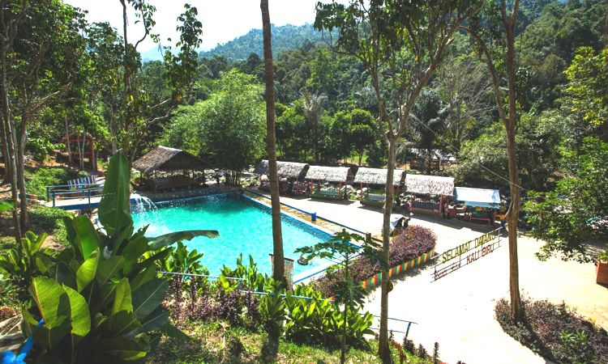
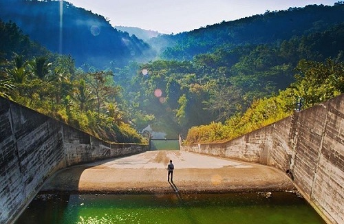
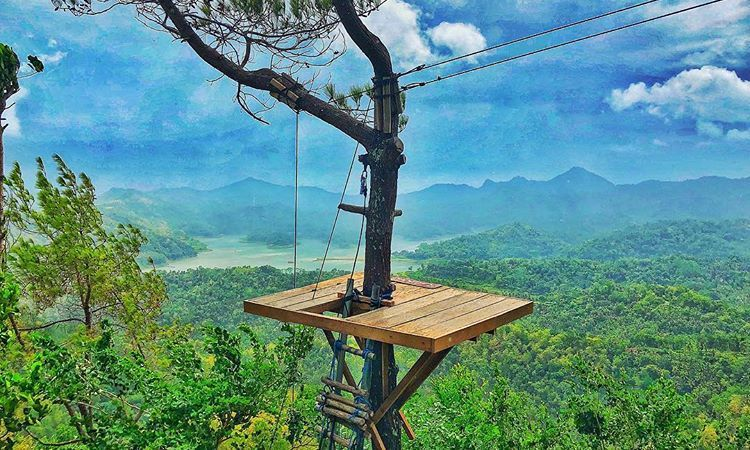
Kalibiru adalah kawasan hutan lindung yang berdiri ditas perbukitan dengantanah yang bergelomban dan berada di ketinggian 450 meter dari atas permukaan laut dengan titik koordinat 7,8°LU dan 110,12°BT. Hutan lindung ini di kelola oleh masyarakat yan di manfaatkan sebagai objek wisata yang bisa meningkatkan nilai ekonomi dan juga sebagai tujuan untuk melestarikan kawasan hutan. Suasana kalibiru yang kental akan suasana pedesaan dengan rindangnya pepohonan disana dan juga udara segar yang di sajikan. Bukan hanya itu yang dapat di sajikan oleh objek wisata kalibiru, tetapi karena keindahannya yang sangat mempesona yang akn wisatawan temukan di puncak bukit.
Di dekat penjualan tiket msuk juga ada beberapa warung yang dapat di manfaatkan oleh wisatawan untuk mengistirahatkan badan dan juga memulihkan tenaga sebelum melanjutkan perjalanan. Pesono keindahan kalibiru yang di lewat landskap berlatar belakang hamparan air berwarna kebiruan di bendungan Sermo serta perbukitan menoreh yang didominasi oleh warna hijau pepohonan. Selain menimati kendahan alam, banyak aktifitas yang dapat di laukan para wisatawan saat berada di sana, yaitu oara wisatawan dapat berfoto ria dengan memanfaatkan lima spot utama yang disediakan oleh pihak pengelola di sana.
Kelima spot tersebut berbayar dan memiliki harga yang berbeda-beda. Tiga spot yaitu spot 1, spot panggung dan spot bundar bertarif Rp.15.000, sedang spot 2 dan spot love bertarif Rp.10.000. aktifitas yang dapat dilakukan dikalibiru yang tidak kalah serunya adalah beberapa permainan outbond, seperti wooden bridge, spider web, climbing, sling dan flying fox dengan ketinggian sekitar 6 – 7 meter dari atas permukaan tanah. Untuk dapat menikmati permainan outbond tersebut wisatawan cukup membayar seharga Rp.35.000. Harga tersebut sudah termasuk peminjaman alat pengaman berupa helm dan full body harness.
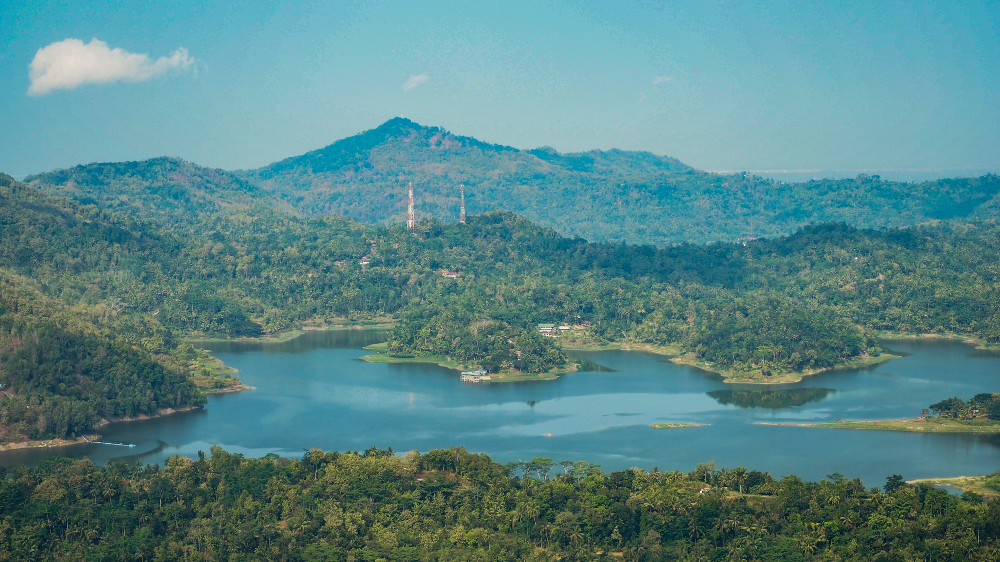
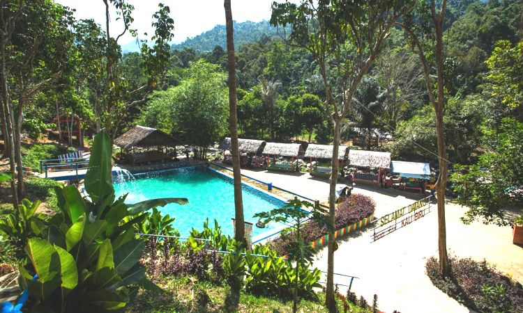
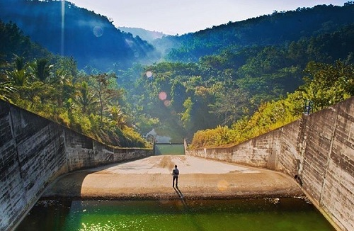
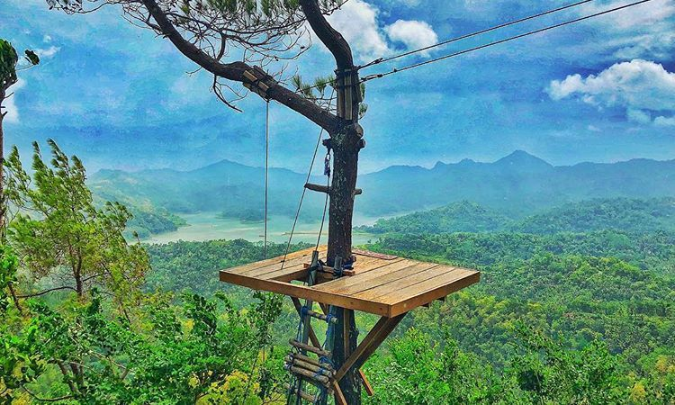